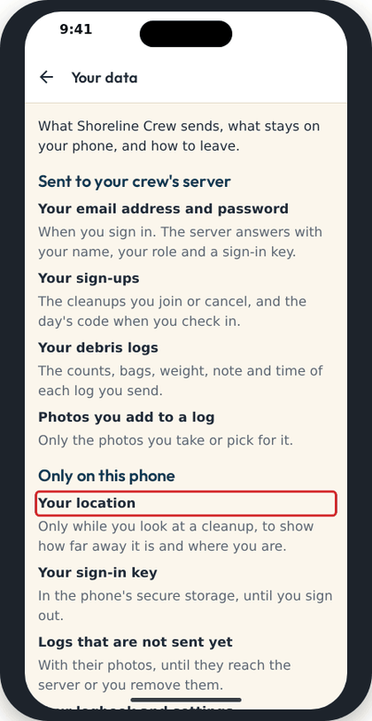

Session 24: Updates, Monitoring and the App Stores
How to teach Session 24: the launch-readiness check (Git, GitHub, the phone test; Expo account optional, store accounts not required), Lesson 9.3 (expo-updates, runtime versions measured with the fingerprint, channels, a crash screen and one reporting seam, CI that works on a fresh checkout) and Lesson 9.4 (the stores' accounts and rules, privacy answers from the code, store-ready config, eas submit to a testing track, the release checklist), with every account-only step quoted from the lessons and hedged as they hedge it.
How to Use This Guide
- Session 24 closes Module 9: Lesson 9.3 (updates, monitoring, CI) and Lesson 9.4 (the stores), wrapped in the launch-readiness check (15 minutes at the start, 15 at the end with the release checklist). Same rhythm for each lesson: frame → live demo → guided lab (new practice, never the lesson's own project) → start the lesson project. Exercises, quiz and journal go home.
- Type, do not paste. Every command below was run for this kit on a copy of the app exactly as a learner has it at the end of Lesson 9.3 or 9.4 (Node 24, a learner's terminal); where the lesson shows the same command, the kit's output is the lesson's card, word for word (the fingerprints included). Ask for a prediction before every run.
- No account, no build, no store, no phone was used to make this kit. Publishing an update, making a build, submitting, pushing to GitHub and everything a phone or a console shows are described the way the lessons describe them: from EAS CLI's source and help, and from Expo's, Apple's and Google's documentation. Say so when you show them. If you have an Expo account and an Android phone with a preview build, Lesson 9.3's Step 6 is a fine extra demo: never required.
- What learners need: nothing paid. Git and a free GitHub account (for the CI push; READY WITH NOTES without it); an Expo account is OPTIONAL; store accounts are NOT required for any step, for the final project or to pass. The launch check prints the same rule.
- Keep
lesson_34.htmlandlesson_35.htmlopen for the tables (runtime policies, what an update may change, accounts and costs, the inventory, listing limits, testing tracks, the release checklist). Labs:labs/module-24/(starter/and TASKS.md are handouts;solution/folders are yours until the session ends).
Learners arrive excited to publish, and every "real" step (an update, a build, a submission, a push) needs an account, the network, or both. Venue networks block Git over HTTPS or phone-to-laptop traffic; Expo sign-ins wait on browser pages; store accounts cost money and days. Before: Session 23's bring list asked for Git, a free GitHub account and (optionally) an Expo account; run the launch check yourself on the venue network the day before. In the room: everything in the agenda runs locally; Step 6 of 9.3 and every store step stay demos from the lessons' cards. The rule to say out loud: no account is required to pass, and nobody pays for anything in this course.
Before the Session
- ☐ Run the kit check once:
python3 labs/check_labs.py module-24from this kit's folder (10 runs, about 70 seconds: both starters fail where they should, both solutions pass their tests and tsc; the launch check says READY on the finished course folder (Git repository, GitHub remote, all of 9.3 and 9.4), NOT READY with the right FIX line on a folder that is not a repository and on one with a store key committed, and READY WITH NOTES on the folder from before Lesson 9.3). - ☐ Your projector copy of the app at the end of Lesson 9.3 (
lesson-34-endfrom the course downloads), withnpm cidone andnpx expo startrun once; a second copy at the end of 9.4 (lesson-35-end); for the fresh-checkout step, a third copy withoutexpo-env.d.tsand.expo/(unziplesson-34-endagain and only runnpm ci). - ☐ Files to hand out:
labs/module-24/without thesolution/folders;lesson-34-start.zipandlesson-35-start.zipfor learners who missed Session 23 (each folder's README has the commands). - ☐ Board, before learners arrive: "plan by radio (update) · kit by van (build)"; the build-or-update table from the lesson (a screen: update · the version: update · a permission sentence: build · a native package: build · the API address: update); "collected = leaves the phone AND is kept"; and the two rules: Expo account optional · store accounts NOT required.
- ☐ Print or share: the workbook (its Start Here page is the launch-readiness checklist), sticky notes for the exit ticket.
| Symptom | Cause | Fix |
|---|---|---|
| An update is published and the phone never changes | The Lesson 9.2 build has no expo-updates; a runtime-version mismatch; no full restart | A new build after Steps 1 to 3; compare the runtime version EAS printed with the build page; close the app completely, twice (or Check for an update). |
CI: four tsc errors in [id].tsx routes and Tally.tsx | A fresh checkout has no generated types | npx expo customize tsconfig.json before npx tsc --noEmit in the workflow (Lab 9.3 Task 3). |
CI: npm test never ends | The app's test script watches (--watchAll) | npm test -- --watchAll=false (Lab 9.3 Task 3). |
git push: main does not exist | The branch has another name (create-expo-app's git init) | git branch shows it; the workflow's branches: [main] must match it (the launch check says so). |
| An "embedded repository" warning in the web course's repository | shoreline-crew is its own repository inside another | Add shoreline-crew/ to the outer .gitignore (Lesson 9.3, Common Questions). |
| Profile tests fail after changing the ids | The tests expect com.example | Update the three expected ids in app.config.test.ts. |
A production build needs an https:// EXPO_PUBLIC_API_URL | Lesson 9.1's guard: the laptop's API is plain http | Expected in the course; a store app needs an https server. |
The launch check: … is in the repository | A key or .env.local committed | git rm --cached, add it to .gitignore, commit; revoke a real key in its console. |
Session 24 Agenda (3 hours)
| Clock | Minutes | Segment | What happens |
|---|---|---|---|
| 0:00 | 15 | Launch-readiness check | node labs/module-24/l9_4-the-app-stores/launch_check.mjs on every laptop: Git and the repository, the by-hand list (GitHub, the phone on the same Wi-Fi), accounts that are optional and not required. |
| 0:15 | 10 | 9.3 Frame and mental model | The plan by radio, the kit by van; the shape of the socket. Which code runs where, and who can take an update. |
| 0:25 | 20 | 9.3 Live demo | expo-updates switched off without an address; fingerprints measured for a screen, a permission sentence and a variant; what an update carries; a fresh checkout's four type errors and the step that fixes them. |
| 0:45 | 20 | 9.3 Guided lab | labs/module-24/l9_3-updates-and-monitoring/starter: who gets the update (Task 1), a reporter that scrubs (Task 2); the workflow repair (Task 3) for fast finishers. |
| 1:05 | 15 | 9.3 Start the lesson project | Steps 3 and 7 locally: the channel test and the CI commands, the way GitHub runs them. Steps 1, 2, 4 and 5 go home; Step 6 only with an Expo account and an Android device. |
| 1:20 | 10 | Break | Leave the build-or-update table and "measure, do not guess" on the board. |
| 1:30 | 10 | 9.4 Frame and mental model | The harbor master and the cargo manifest: accounts, ids, privacy answers from the code, review, testing tracks. |
| 1:40 | 20 | 9.4 Live demo | The data walk (one fetch), the profile tests after an id change, the production introspect, the https guard, eas submit's help from the lesson's card. |
| 2:00 | 20 | 9.4 Guided lab | labs/module-24/l9_4-the-app-stores/starter: a listing within the limits (Task 1) and privacy answers from an inventory (Task 2). |
| 2:20 | 15 | 9.4 Start the lesson project | Steps 1 and 6 in the room (the inventory, the submit profile and its test); Steps 2 to 5 and 7 go home. |
| 2:35 | 15 | Release checklist and launch check again | The release checklist walked for Shoreline Crew; the launch check rerun: READY, READY WITH NOTES or a written plan for Session 25. |
| 2:50 | 10 | Wrap-up | Exit ticket (3 questions), homework, bring list for Session 25. |
| Total | 180 | Ends at 3:00. |
In the room. The lesson pages estimate 160 + 155 = 315 minutes for a learner working alone; after the launch check (30 minutes in two parts), the break and the wrap-up, the room has 130. Each lesson keeps its shape (model, demo, lab, project start); the steps that need an account (9.3 Step 6) or are writing work (9.4 Steps 4, 5 and 7) go home.
Goes home (about 2 to 3 hours). Lesson 9.3's project Steps 1, 2, 4 and 5 (expo-updates and the address, the Profile line, the crash screen and reportError), Step 6 only for learners with an Expo account and an Android phone or emulator (optional; everyone else reads it and can say what it does), and Step 7's push to GitHub with a green CI run; Lesson 9.4's project Steps 2 to 5 and 7 (the Your data screen, store-ready config, the privacy answers and policy draft on paper, the listing draft, the release checklist walked for Shoreline Crew); both labs' remaining tasks; each lesson's Hands-on Exercises; both Quick Quizzes; both journal entries; the launch check rerun until it says READY or READY WITH NOTES. Nothing here needs an account or money to pass.
Protect, in this order: the launch check result for every learner; 9.3's "measure, do not guess" step; 9.3's fresh-checkout step; 9.4's data walk. Cut first: 9.3's "what an update carries" (it is the lesson's Step 2), then 9.4's "honest end of the road" (one sentence instead), then the 9.4 project start (the submit profile goes home).
Opening Segment
Launch-Readiness Check
15 min| 3m | Why today: after Session 24 the final project starts, and the final project needs a repository, CI and a way to show the app |
| 8m | Everyone runs node labs/module-24/l9_4-the-app-stores/launch_check.mjs from shoreline; you read the room's verdicts |
| 4m | The by-hand list: GitHub, the phone on the same Wi-Fi and its fallbacks; what is optional, what is not required |
- Why (3m). Say: "From Session 25 on you build your own app. Before that, three things must work on your laptop: a Git repository of its own with a remote on GitHub, the checks that run on every push, and one way to show the app on a phone or in the web preview. Two things you do NOT need: a paid store account, and (if you prefer) an Expo account."
- Run it (8m). On the projector, then theirs, in the course folder
shoreline:node labs/module-24/l9_4-the-app-stores/launch_check.mjs. It changes nothing, uses no network and asks for no password: it readsshoreline-crew(Git, the workflow, app.config.ts, eas.json, the Your data facts) and prints OK, CHECK, FIX and NOTE lines, then a DO BY HAND list. Most learners arrive with Session 23's code (the end of Lesson 9.2), which says READY WITH NOTES: the CHECK lines are today's steps. This is what the kit's run printed on that folder, committed:
CHECK no GitHub remote yet: create an empty repository named shoreline-crew on github.com (a free account) and push (Lesson 9.3, Step 7) CHECK no .github/workflows/ci.yml yet: the checks on every push are Lesson 9.3's Step 7 CHECK eas.json: preview and production need their own channels (Lesson 9.3, Step 3) CHECK eas.json: the production submit profile has no "track": "internal" yet (Lesson 9.4, Step 6) CHECK no src/utils/privacy.ts yet: the Your data screen is Lesson 9.4, Step 2 ... READY WITH NOTES: the CHECK lines are steps of Lessons 9.3 and 9.4 still to do; nothing stops the final project
- NOT READY means a real problem, not a missing lesson step. The kit proved the two common ones (the FIX lines below): a project that is not a Git repository (a download unzipped without Git), and a store key committed by mistake. A third:
shoreline-crewinside the web course'sshorelinerepository (Lesson 9.3's Common Questions: addshoreline-crew/to the outer.gitignore,git initinside). Fix the first in the room (two minutes); the others at the break. - The by-hand list (4m). Read it from the projector. The phone test is Lesson 1.2's and 5.1's: API with
node server.ts --host, Metro, Expo Go on the same Wi-Fi, or the API address in the phone's browser. Venue networks often block phone-to-laptop traffic: a phone hotspot, then--tunnel, then the web preview, which is a valid way to finish every lesson and the final project. Expo account: optional. Store accounts: NOT required, no paid developer account to pass. Write both on the board.
FIX shoreline-crew is not a Git repository: in shoreline-crew run git init, git add -A and git commit -m "First commit" (create-expo-app did this in Lesson 1.2) FIX play-service-account.json is in the repository: a store key or local setting must never be committed. git rm --cached play-service-account.json, add it to .gitignore, commit, and treat a key as leaked: revoke it in its console and make a new one (Lesson 9.4)
- Nobody creates or pays for a store account in this session. If a learner wants one for their own app later, the lesson's account table and "fees and rules change" note are the reading; the kit never asks for it.
- Do not debug Wi-Fi for the whole room. One minute per phone; a learner whose phone cannot connect writes the fallback they will use (hotspot, tunnel or web preview) in the workbook's Start Here box and moves on.
- A FIX for a committed key is serious, not embarrassing. Treat the key as leaked: revoke it in its console, then
git rm --cached(the check prints the steps). In the course, the keys are made up; in a job, they are not.
Lesson Plans
Updates and Monitoring
65 min- Explain how expo-updates and EAS Update deliver new JavaScript and assets to an installed build, and when a phone starts using them
- Choose a runtime version policy, and measure on your computer whether a change needs a new build or can go out as an update
- Connect build profiles to update channels, and publish an update to the right builds with the right environment variables
- Say what an over-the-air update may and may not change, under Expo's technical limits and the app stores' rules
- Tell the user-facing version from build numbers, and add a crash screen and a reporting seam that a crash-reporting service can plug into
- Write a GitHub Actions workflow that runs the type check, lint and tests on every push, including the step a fresh checkout of an Expo project needs
| 10m | Frame: the plan by radio, the kit by van; the shape of the socket; which code runs where |
| 20m | Live demo: expo-updates off without an address, fingerprints measured, what an update carries, the fresh checkout and the customize step |
| 20m | Guided lab: l9_3-updates-and-monitoring/starter, Tasks 1 and 2 |
| 15m | Start the lesson project: Steps 3 and 7 locally |
From the lesson: "Crews already on the beach cannot get new tools until the supply van comes back: that is a new build through a store. But the day's plan, the map of where to sweep, the list of what to log, can be radioed to them at any time: that is an update. The radio only works with crews whose radio set matches the channel and the model of kit (the runtime version), and a crew hears the new plan when they next check in, not in the middle of a sentence."
Then the second picture: "A build is a socket; an update is a plug. The runtime version describes the socket's shape. With the fingerprint policy, Expo measures the socket for you every time, so a plug made for yesterday's socket simply does not go in. Nothing breaks: the phone keeps running what it has."
Then the lesson's table of where code comes from: Expo Go and development builds load from Metro (no updates); a release build without expo-updates (Lesson 9.2's Shoreline Preview) can never update; one with expo-updates and an address updates on its channel; the web preview deploys files instead.
On your projector copy at the end of Lesson 9.3. No account is used: nothing is published. The fingerprints below are the lesson's, character for character; learners' may differ (a pasted project id or other package versions change them), and the same-or-different pattern is what counts.
- expo-updates is installed, and off (3m). "Lesson 9.2's Shoreline Preview cannot take updates: expo-updates is native code, so it needs one more build." Show the address and the policy the lesson added, then the introspect (iOS settings):
shoreline-crew/app.config.ts
// EAS Update (Lesson 9.3): updates come from your project's address on Expo's update service. // Until easProject has an id there is no address, and builds run only the code they were built with. const updatesUrl = easProject.projectId ? `https://u.expo.dev/${easProject.projectId}` : undefined;
shoreline-crew/app.config.tsruntimeVersion: { policy: 'fingerprint' }, updates: { url: updatesUrl },npx expo config --type introspect | grep EXUpdates
EXUpdatesEnabled: false, EXUpdatesCheckOnLaunch: 'ALWAYS', EXUpdatesLaunchWaitMs: 0, EXUpdatesEnableBsdiffPatchSupport: true, EXUpdatesRuntimeVersion: 'file:fingerprint'EXUpdatesEnabled: false: no project id, so no update address, and every build runs its embedded code. With an id, the lesson's card showstrueandEXUpdatesURL: 'https://u.expo.dev/…'. Check at every start, never wait (LaunchWaitMs: 0): the update runs at the NEXT start. - Measure, do not guess (6m). "Which changes need a build?" Ask for predictions first, then measure (the kit keeps only the runtimeVersion of resolve's long line; learners see the whole line and read its start). Development, then preview:
npx expo-updates runtimeversion:resolve --platform android APP_VARIANT=preview npx expo-updates runtimeversion:resolve --platform android
29268b22f86138bf4fc840f53d9fee4a7e94525a 142af542088aaca299daa3c4fdc8d957b9068665
Both are the lesson's hashes, character for character. Then add a comment to the Logbook screen: the preview hash stays142af542…(JavaScript: an update). Reword the location sentence in app.config.ts:a510c337…, different (native: a build). Undo both. - What an update carries (4m). The export
eas updateruns, for Android, with another API address for the preview variant (the lesson's Step 2):APP_VARIANT=preview EXPO_PUBLIC_API_URL=http://192.168.1.50:4000 npx expo export --platform android --dump-sourcemap --clear
› Assets (29): › android bundles (2): _expo/static/js/android/entry-ba6ad7b71d48e9c6ca50c9e62e8a6afc.hbc (4.5MB) _expo/static/js/android/entry-ba6ad7b71d48e9c6ca50c9e62e8a6afc.hbc.map (11MB) › Files (1): metadata.json (2KB) Exported: dist
One Hermes bundle (the same file name as the lesson's), its source map, 29 assets, metadata.json.grep -c 192.168.1.50on the bundle finds the new address inside it: EXPO_PUBLIC_ values are JavaScript, so an update can change them. No native code, no app name: those live in the build.rm -rf distafterwards. - The fresh checkout (5m). "GitHub's computer has never run
npx expo start." The kit's copy without the generated types:npx tsc --noEmit
src/app/check-in/[id].tsx:51:29 - error TS2322: Type 'string | string[] | undefined' is not assignable to type 'string'. Type 'undefined' is not assignable to type 'string'. 51 return <CheckInForCleanup id={id} viewer={viewerId(session)} />; ~~ ... Found 4 errors in 4 files. Errors Files 1 src/app/check-in/[id].tsx:51 1 src/app/cleanups/[id].tsx:42 1 src/app/log/[id].tsx:61 1 src/components/Tally.tsx:109The lesson's card. Nothing is wrong with the code: the route types and expo-env.d.ts are gitignored. The workflow's extra step writes them without Metro: - The workflow's steps, the way GitHub runs them (2m).
shoreline-crew/.github/workflows/ci.yml
steps: - uses: actions/checkout@v7 - uses: actions/setup-node@v7 with: node-version: 24 cache: npm - run: npm ci # expo-env.d.ts and the typed routes are made by `npx expo start`, which never runs here: # this writes them without starting Metro (tsconfig.json itself stays as it is) - run: npx expo customize tsconfig.json - run: npx tsc --noEmit - run: npx expo lint - run: npm test -- --watchAll=falsenpx expo customize tsconfig.json
Using src/app as the root directory for Expo Router. Generating: tsconfig.json
Two lines (the lesson's card), thennpx tsc --noEmitandnpx expo lintprint nothing, andnpm test -- --watchAll=falseendsTests: 57 passed, 57 total. The workflow itself never ran on GitHub while the course was checked (no push): it was checked with actionlint and the same commands, as the lesson says.
- "I published, and nothing changed." The 9.2 build, a different runtime version, or no full restart. Coach: "Which build is on the phone, and what runtime version did EAS print?" (Self-check Q2, the lesson's Common Mistakes.)
- Sending a native change as an update. A permission sentence or a new native package by update. Coach: "Run resolve with the variant set: same hash or not?" (Self-check Q1, Exercise 1.)
- CI that fails on GitHub only. The generated types, or
npm testthat watches. Coach: "Which files doesnpx expo startwrite that a fresh checkout does not have?" (Self-check Q3, Lab 9.3 Task 3.)
Folder: labs/module-24/l9_3-updates-and-monitoring/starter/ (task sheet labs/module-24/l9_3-updates-and-monitoring/TASKS.md); your reference is labs/module-24/l9_3-updates-and-monitoring/solution/. Plain TypeScript on Node (npm test = node:test, npm run check = tsc): five phones and four updates, a reporter of the course app's shape, Tidepool Count's broken workflow. Nothing to install beyond the shared lab install.
- Run it as shipped (2m):
npm testinstarter. One test passes, eight fail; read the failing names together:
✖ Task 3: installs exactly what the lockfile says ✖ Task 3: writes the generated types before the type check ✖ Task 3: runs the tests once, then stops ✖ Task 1: a JavaScript fix for preview reaches only the preview build it was made for ✖ Task 1: an update published without APP_VARIANT reaches nobody ✖ Task 2: an email address never leaves the phone ✖ Task 2: neither does a sign-in key, even inside an address ✖ Task 2: the reporter sends a scrubbed copy and keeps the original
- Task 1 in pairs (8m):
takesUpdatechecks the channel only. Ask before they type: "which two facts besides the channel decide?" (expo-updates in the build, the same runtime version). The second test is the lesson's "publishing without the variant's settings" mistake as data. - Task 2 (8m):
scrubandscrubbing(send): emails and the Bearer key hidden, a COPY sent. Circulate for learners who editerror.messagein place (the third test catches it: the app may still show the original). - Expected when all three tasks are done:
✔ Task 3: installs exactly what the lockfile says ✔ Task 3: writes the generated types before the type check ✔ Task 3: runs the tests once, then stops ✔ Task 1: a JavaScript fix for preview reaches only the preview build it was made for ✔ Task 1: an update published without APP_VARIANT reaches nobody ✔ Task 1: an update for the store app never reaches a tester ✔ Task 2: an email address never leaves the phone ✔ Task 2: neither does a sign-in key, even inside an address ✔ Task 2: the reporter sends a scrubbed copy and keeps the original ℹ pass 9 ℹ fail 0
- Debrief (2m): "Which phone in Task 1 is Lesson 9.2's Shoreline Preview?" (no expo-updates: never). "Where would
scrubbingplug into the course app?" (onesetReportercall at startup.) Fast finishers: Task 3, the workflow (npm ci, the customize step, tests that run once).
The lesson project is Shoreline Crew Stays Up to Date, seven steps. In the room (15 minutes): Step 3 (the channels in eas.json and their test) and Step 7's commands run locally, the way GitHub will.
- Step 3: the two channels, the new test,
npm test -- --watchAll=false app.config(4 passed). Step 7: create.github/workflows/ci.yml, then the four commands; the end of the tests says 57 passed. - Done in the room = the channel test green and the CI commands green locally. Goes home: Steps 1, 2, 4 and 5 (expo-updates, the address and policy, the Profile line, the crash screen), Step 7's push and the green run on GitHub, and Step 6 (an Expo account and an Android device; optional: without them, read it and say what it does and why the 9.2 build cannot take an update).

Ask these out loud during the demo and the lab:
- Which builds can take an update? Answer: release builds made with expo-updates and an address, on the update's channel, with the same runtime version.
- What does the fingerprint change for? Answer: anything native: packages, plugins, ids, permission sentences, the variant; not screens, the version or the API address.
- Why does Profile get an Updates line? Answer: an update changes neither the version nor the build number; a tester's report needs to say which code ran.
- What does the root ErrorBoundary give a volunteer? Answer: a calm crash screen with Try again instead of a closed app, and one report through reportError.
Workbook self-check, items Q1 to Q6.
Answers: Q1 B) It needs a new build: the preview fingerprint changed, so no installed preview build would accept an update made from it; Q2 B) When the app is next started after the update downloaded in the background (Expo's docs: sometimes up to two restarts); Q3 D) Add npx expo customize tsconfig.json to the workflow before the type check; Q4 No update address: easProject has no project id, so updates.url is undefined. Pasting your Expo project id (Lesson 9.2) makes the address https://u.expo.dev/<id> and turns it on; Q5 A) eas update does not read a build profile's env; with --environment it does not read .env.local either; Q6 C) One setReporter call at startup can plug any service in later, and no screen changes. Full set with explanations in the Answer Key.
Support: a one-line card, "screen = update · native = build · measure with resolve"; pair learners for Lab 9.3 Task 1 with the five phones drawn on paper.
Stretch: Lab 9.3 Task 3; the lesson's Exercise 2 (bundle in CI) and Exercise 3 (a better development reporter with the update id); with an Expo account, the Bonus Challenge (a 50 % rollout).
The App Stores
65 min- Name what Google Play and the App Store require before an app can be published: developer accounts and their real costs, permanent app ids, and the technical rules builds must meet
- Build a data inventory from an app's own code and use it to answer Apple's App Privacy details and Google Play's Data safety form
- Explain both stores' rules for privacy policies and account deletion, and give an app an honest in-app path to both
- Prepare a store listing within the stores' limits, and avoid the most common reasons apps are rejected in review
- Configure eas submit for a testing track, and work through a release checklist from code to production
| 10m | Frame: the harbor master; the cargo manifest; accounts and real costs, read from the lesson's table |
| 20m | Live demo: the data walk, privacy.ts, your own ids and the tests, the production introspect, the https guard and eas submit's help |
| 20m | Guided lab: l9_4-the-app-stores/starter, Tasks 1 and 2 |
| 15m | Start the lesson project: Steps 1 and 6 |
From the lesson: "A boat can sail anywhere in its own bay. To use the public harbor, it checks in with the harbor master, who wants three things: papers that say who owns the boat (the developer account), a crew list and a cargo manifest that match what is really on board (the listing and the privacy answers), and a boat that floats (a build that works when the reviewer tries it). The harbor master does not care how nice the paint is. Most boats turned away had papers that did not match the cargo."
Then the manifest: "The privacy form is a cargo manifest: a list of what the boat carries off the beach. You write it by walking the deck with a clipboard (reading the code), not by remembering what you loaded last month." Write collected = leaves the phone AND is kept under it.
Then the accounts table, read from the lesson, with its version note ("fees and rules change: open the page before you pay"), and the course's rule: no store account is needed for any step or to pass. A client's app is published on the client's accounts.
On your projector copy at the end of Lesson 9.4, API running as usual. No store account exists in this demo: the consoles, review and eas submit are the lesson's cards.
- Walk the deck: one fetch (4m). "You cannot answer a privacy form from memory." From
shoreline-crew(PowerShell: VS Code's search, Match Whole Word):grep -rnw "fetch" src --include="*.ts*" --exclude-dir=mocks --exclude-dir=test --exclude="*.test.*"
src/hooks/useRefreshOnFocus.ts:6: * Each time this screen comes back into view, fetch its stale answers again: the queries whose src/api/client.ts:302: response = await fetch(url, { ...init, headers }); src/api/client.ts:304: // In the browser a failed fetch is a TypeError; on a phone, Expo's fetch throws its own error src/components/UpdateStatus.tsx:8:// Which code this app runs, and (in preview and production builds) a way to fetch a new version src/utils/photoFiles.web.ts:6: const photo = await (await fetch(uri)).blob(); src/utils/photoFiles.web.ts:13: return await (await fetch(uri)).blob();The lesson's card. Three comments; photoFiles.web.ts reads a local blob. One real request: client.ts line 302, to EXPO_PUBLIC_API_URL. Then the native modules that touch personal data (grep -rlE "expo-(location|image-picker|…)"): seven files; ask of each "does it leave the phone, and is it kept?" - The cargo manifest in one file (2m). privacy.ts holds the facts the Your data screen shows and the forms are answered from. The two links are placeholders on purpose:
shoreline-crew/src/utils/privacy.ts
export const notCollected = 'No ads, no analytics, no tracking, and no crash reports.'; // Both stores ask for these pages on the web, and for a way to reach them from inside the app. // Replace them with your own pages before a store release: a link that goes nowhere is a rejection. export const privacyPolicyUrl = 'https://shorelinecrew.example.org/privacy'; export const accountDeletionUrl = 'https://shorelinecrew.example.org/delete-account';
In a store build, example.org links are the "Broken links" and "Placeholder content" rejections at once. - Your own ids, and the tests that notice (4m). Replace
com.example.shorelinecrewwithorg.marisolcrew.shorelinecrew(three ids), then:npm test -- --watchAll=false app.config
FAIL ./app.config.test.ts ✕ builds Shoreline Dev from the development profile ✕ builds Shoreline Preview from the preview profile, with an API address ✕ refuses the production profile until it has an https API address ✓ gives each release profile its own update channel (Lesson 9.3) ✓ sends store uploads to testers first (Lesson 9.4) Tests: 3 failed, 2 passed, 5 total ● builds Shoreline Dev from the development profile expect(received).toBe(expected) // Object.is equality
The lesson's card. The tests say exactly which ids they expected: update the three expected ids, and they pass. Ids are permanent once a build is uploaded. Undo (the course keeps com.example). - What the store build carries (5m). The encryption answer and the blocked permission, then the production introspect with a made-up https address:
shoreline-crew/app.config.ts
blockedPermissions: variant === 'production' ? ['android.permission.SYSTEM_ALERT_WINDOW'] : [],APP_VARIANT=production EXPO_PUBLIC_API_URL=https://crew-api.example.org npx expo config --type introspect | grep -E "ITSApp|UsageDescription|permission\.|tools:node"
ITSAppUsesNonExemptEncryption: false, NSLocalNetworkUsageDescription: 'Expo Dev Launcher uses the local network to discover and connect to development servers running on your computer.', NSCameraUsageDescription: 'Shoreline Crew uses your camera to photograph the debris you collected at a cleanup.', NSLocationWhenInUseUsageDescription: "Shoreline Crew uses your location to show how far you are from a cleanup's meeting point.", 'android:name': 'android.permission.INTERNET' 'android:name': 'android.permission.VIBRATE' 'android:name': 'android.permission.READ_EXTERNAL_STORAGE', 'android:name': 'android.permission.WRITE_EXTERNAL_STORAGE', 'android:name': 'android.permission.ACCESS_COARSE_LOCATION' 'android:name': 'android.permission.ACCESS_FINE_LOCATION' 'android:name': 'android.permission.SYSTEM_ALERT_WINDOW', 'tools:node': 'remove' 'android:name': 'android.permission.RECORD_AUDIO', 'tools:node': 'remove'The lesson's card.ITSAppUsesNonExemptEncryption: falseis the encryption answer; SYSTEM_ALERT_WINDOW has'tools:node': 'remove'. Ask for a prediction: how manytools:nodelines in the PREVIEW variant? (The kit's run: 1, only RECORD_AUDIO.) NSLocalNetworkUsageDescription comes from expo-dev-client: whether a store build ever asks it is a real-iPhone check (VERIFY). - The honest end of the road (3m). With the laptop's address in .env.local, the production config:
APP_VARIANT=production npx expo config --type public
env: load .env.local env: export EXPO_PUBLIC_API_URL Error: Error reading Expo config at <folder>/app.config.ts: A production build needs an https:// EXPO_PUBLIC_API_URL, not "http://localhost:4000".
The guard working, not a bug: a store app needs an https server every phone can reach. Theneas submit --helpfrom the lesson's card (EAS CLI 27.10; nobody runs it today: it needs a build and a store account). The course could not use a store account: what the consoles and reviewers do comes from Apple's, Google's and Expo's documentation, as the lesson says.
The lesson's card for npx eas-cli@latest submit --help (trimmed; quoted, not run):
submit app binary to App Store and/or Play Store USAGE $ eas submit [-p android|ios|all] [-e <value>] [--latest | --id <value> | --path <value> | --url <value>] [--what-to-test <value>] [--verbose] [--wait] [--verbose-fastlane] [-g <value>...] [--non-interactive] [--auto-testflight-setup] ...
- Answering the forms from memory. "We don't collect location" while a map SDK might. Coach: "Show me the line in the code, then the SDK's own page." (Self-check Q7 and Q8; Lab 9.4 Task 2.)
- Putting com.example back when the tests fail. Coach: "What did the test expect, and is it still true?" (Self-check Q9.)
- Thinking Shoreline Crew can be published. Coach: "Who could reach your laptop's API?" (Self-check Q12, the guard; the lesson's Common Questions: publish your own app, Lesson 10.1.)
Folder: labs/module-24/l9_4-the-app-stores/starter/ with labs/module-24/l9_4-the-app-stores/TASKS.md; your reference is labs/module-24/l9_4-the-app-stores/solution/. Tidepool Count, a made-up citizen-science app: its listing against the lesson's limits, and its privacy answers from an inventory. The same folder holds the launch check (labs/module-24/l9_4-the-app-stores/launch_check.mjs).
- Run it as shipped (2m):
npm testinstarter: one passes, five fail:
✖ Task 1: keywords are counted in bytes ✖ Task 1: Google Play's short description is short ✖ Task 2: what is processed only on the phone is not collected ✖ Task 2: the form lists exactly what leaves the phone and is kept ✖ Task 2: an app that creates accounts must offer deletion inside the app
- Task 1 (8m): two mistakes in
listing.ts: keywords counted in characters (App Store Connect counts BYTES: the test's French keywords are 100 characters and more than 100 bytes) and Google Play's short description limit (80, not 170). - Task 2 (8m):
answerForcalls everything collected;deletionInAppis always false. Ask first: "the tide-table lookup leaves the phone: collected?" (no: not kept.) - Expected when both tasks are done:
✔ Task 1: a listing within every limit has no problems ✔ Task 1: keywords are counted in bytes ✔ Task 1: Google Play's short description is short ✔ Task 2: what is processed only on the phone is not collected ✔ Task 2: the form lists exactly what leaves the phone and is kept ✔ Task 2: an app that creates accounts must offer deletion inside the app ℹ pass 6 ℹ fail 0
- Debrief (2m): "Which row would a from-memory answer get wrong?" (location: not collected; the crash reports: collected even without the account.) "Shoreline Crew creates no accounts; why the delete button?" (the policy must explain deletion anyway; reviewers judge the spirit; the first Join the crew makes it required.)
The lesson project is Shoreline Crew, Store-Ready, seven steps, all on the computer, no store account. In the room (15 minutes): Step 1 (the two searches and the inventory questions) and Step 6 (the submit profile and its test).
- Step 1: the two greps; compare with the lesson's inventory. Step 6:
"track": "internal"in eas.json, the new test,npm test -- --watchAll=false app.config(5 passed), then the whole suite: 58. - Done in the room = the inventory notes and 58 tests passing. Goes home: Step 2 (the Your data screen), Step 3 (encryption answer, blocked permission, own ids and their tests), Steps 4 and 5 on paper (both privacy forms with a sentence per judgment call, a privacy policy draft, the listing draft), Step 7 (the release checklist marked done / not possible / to do).

Ask these out loud:
- What does "collected" mean on both forms? Answer: sent off the phone and kept longer than the request needs.
- Why are app ids decided before the first upload? Answer: a store knows the app by its id forever; com.example is refused.
- Where does
eas submitsend Shoreline Crew's Android uploads? Answer: internal testing (the submit profile's track); the listing is not touched. - Name two things a reviewer needs. Answer: a running server, a demo account (and anything else, such as the day's check-in code) in the review notes.
Workbook self-check, items Q7 to Q12.
Answers: Q7 C) One: client.ts line 302; Q8 A) Not collected: data processed only for the moment of a request is not collected; Q9 B) Update the three expected ids in app.config.test.ts to your own; Q10 The store build leaves the "draw over other apps" permission out (blockedPermissions, production only); preview prints 1 line (RECORD_AUDIO only), production 2; Q11 D) No: no store account and no paid developer account is needed for the course or to pass; Q12 The guard wants https, not just "not localhost"; a store app needs an https server every volunteer's phone can reach (the course's API runs on your computer). Full set with explanations in the Answer Key.
Support: give the inventory table from the lesson as a printed handout and let learners tick "leaves the phone? kept?" per row before Task 2.
Stretch: the lesson's Exercise 2 (review notes for a real Shoreline Crew) and Exercise 3 (plan real account deletion); the Bonus Challenge (real privacy and deletion pages as a static site).
Closing Segment
Release Checklist and Launch Check Again
15 min- The release checklist (8m). Show the lesson's table (Code, Identity, Config, Privacy, Listing, Review, Testing, Release). Walk it for Shoreline Crew with the room: what is done (CI, channels, the encryption answer, the submit track), what is not possible in the course (an https server, real ids and pages, accounts, real-phone screenshots, a reviewer account), what is to do. Say: "This list is where your final project plan starts in Session 25: decide the server, the ids, the data and the deletion story before the first screen."
- The launch check again (7m). Everyone reruns
node labs/module-24/l9_4-the-app-stores/launch_check.mjs. The goal is READY or READY WITH NOTES (the CHECK lines are the project steps that went home). NOT READY learners write the FIX line and their plan in the workbook. The kit's run on the finished folder, the top part:
OK Node.js 24.22.2 OK shoreline-crew is a Git repository of its own: branch main, 1 commit OK nothing uncommitted OK no store keys, keystores or .env.local files in the repository OK origin is a GitHub repository: https://github.com/your-github-username/shoreline-crew.git OK .github/workflows/ci.yml installs with npm ci, writes the route types, then runs the type check, lint and the tests NOTE no Expo project id in app.config.ts: fine. An Expo account is optional in this course; without one you skip the cloud builds and updates and read their steps (Lessons 9.2 and 9.3) NOTE the app ids are still com.example.*: right for the course; your own app picks ids on a domain you control before its first upload (Lesson 9.4) OK eas.json: preview and production builds have their own update channels OK eas.json: store uploads go to internal testing first OK src/utils/privacy.ts: the Your data facts, the same ones the privacy forms are answered from NOTE the privacy policy and deletion links are example.org placeholders: right for the course, a rejection in a store (Lesson 9.4) NOTE the app reads the API at http://localhost:4000: right for the web preview; a phone needs your computer's address instead (below)
Then the by-hand list, which no tool can check:
DO BY HAND (no tool can check these): - The phone test (Lessons 1.2 and 5.1): phone and computer on the same Wi-Fi; start the API with node server.ts --host and Metro with npx expo start; scan the QR code with Expo Go (iPhone: allow Local Network), or open http://<your computer's address>:4000/api in the phone's browser. The address is the one in Metro's exp:// line. - If the phone cannot connect: a guest or venue network often blocks phones from reaching computers. Try a hotspot from the phone, then npx expo start --tunnel, then the web preview (press w): a valid way to finish every lesson and the final project. - GitHub: push (git push), open the repository's Actions tab, and wait for the green check of the CI run (Lesson 9.3, Step 7). - Expo account: OPTIONAL. With one, Lessons 9.2 and 9.3 make real builds and updates on the Free plan; without one, nothing in the course is blocked. - Store accounts: NOT REQUIRED. No Apple Developer Program or Google Play Console account and no paid developer account is needed for this course, for the final project, or to pass. Do not pay for one for the course.
Closing
Learners answer in the workbook's Exit Ticket box or on a sticky note. Sort into "got it" and "not yet" before Session 25: question 3's pile tells you who needs a minute on the launch rules.
- Name one change that can go out as an update and one that needs a new build, and how you would check. Answer: a screen's text (update), a permission sentence or a native package (build);
npx expo-updates runtimeversion:resolvewith the variant set: a different hash means a build. - What does "collected" mean on the stores' privacy forms, and is Shoreline Crew's location collected? Answer: sent off the phone and kept; no: the distance is worked out on the phone.
- Which accounts do you need for this course? Answer: a free GitHub account for the CI push; an Expo account is optional; no store account and no paid developer account.
- Finish both lesson projects. 9.3: Steps 1, 2, 4 and 5; Step 7's push and a green CI run; Step 6 only with an Expo account and an Android device (optional). 9.4: Steps 2 to 5 and 7.
- Lesson exercises. 9.3: Exercises 1 and 2 (Exercise 3 stretch). 9.4: Exercises 1 and 2 (Exercise 3 stretch).
- Both Quick Quizzes on the lesson pages (answers in the Answer Key).
- Labs: Lab 9.3 Task 3 (the workflow); whatever is left of both labs.
- Journal: both entries. 9.4's asks for an honest privacy summary of the app you plan to build: bring it to Session 25.
- The launch check: rerun
node labs/module-24/l9_4-the-app-stores/launch_check.mjsuntil it says READY (or READY WITH NOTES), and tick the workbook's Start Here checklist. - Before the Next Lesson (from 9.4): read the final-project kit's README and briefs in the course downloads, and pick a brief (or your own idea) to bring.
- The launch check's last line (READY or READY WITH NOTES), and the course folder with
shoreline-crewat the end of Lesson 9.4, committed and pushed if you have GitHub. - Session 25 is the Final Project Workshop (Lessons 10.1 and 10.2): bring the brief you chose from
downloads/final-project-kit/(or your own idea), your 9.4 journal entry (what your app would collect), and the release checklist you marked for Shoreline Crew. - A phone with Expo Go if you have one (or the web preview), and the workbook.
If You Run Long or Short
- Protect: the launch check result for every learner; 9.3's measuring step; 9.3's fresh-checkout step; 9.4's data walk.
- Cut first (saves 4m): 9.3's "what an update carries" (the lesson's Step 2).
- Cut second (saves 3m): 9.4's "honest end of the road": one sentence instead.
- Cut third (saves 15m): the 9.4 project start: the submit profile goes home with the other steps.
- Lab 9.3 Task 3 for everyone, then the lesson's Exercise 2 (an Android export step in CI) run locally.
- Lesson 9.4's Exercise 1 as a whole-room discussion (a phone number, Sentry, sort by distance, location at check-in).
- With your own Expo account and an Android preview build: Lesson 9.3's Step 6 live (an update, two restarts, the rollback).